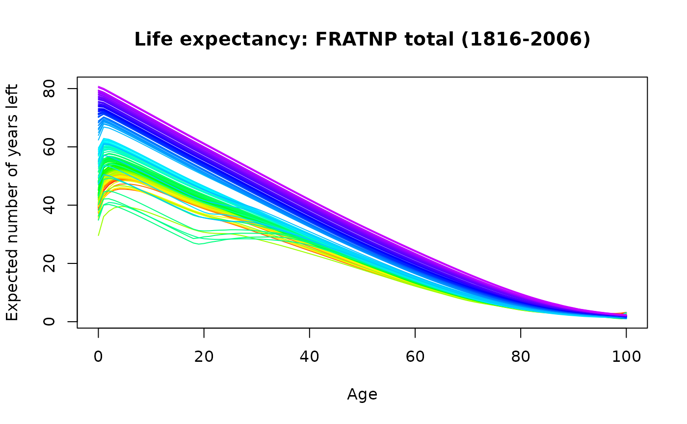
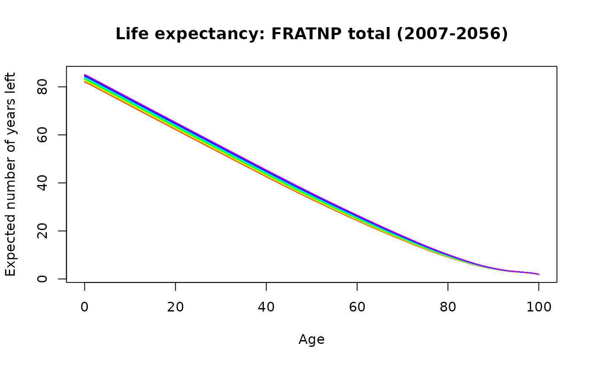

Computes period and cohort lifetables from mortality rates for multiple years.
Arguments
- data
Demogdata object such as obtained from
read.demogdata,forecast.fdmorforecast.lca.- series
Name of series to use. Default is the first series in
data[["rate"]].- years
Vector indicating which years to include in the tables.
- ages
Vector indicating which ages to include in table.
- max.age
Age for last row. Ages beyond this are combined.
- type
Type of lifetable:
periodorcohort.
Value
Object of class “lifetable” containing the following components:
- label
Name of region from which data are taken.
- series
Name of series
- age
Ages for lifetable
- year
Period years or cohort years
- mx
Death rate at age x.
- qx
The probability that an individual of exact age x will die before exact age x+1.
- lx
Number of survivors to exact age x. The radix is 1.
- dx
The number of deaths between exact ages x and x+1.
- Lx
Number of years lived between exact age x and exact age x+1.
- Tx
Number of years lived after exact age x.
- ex
Remaining life expectancy at exact age x.
Note that the lifetables themselves are not returned, only their components. However, there is a print method that constructs (and returns) the lifetables from the above components.
Details
For period lifetables, all years and all ages specified are included in the tables. For cohort lifetables,
if ages takes a scalar value, then the cohorts are taken to be of that age in each year contained in years.
But if ages is a vector of values, then the cohorts are taken to be of those ages in the first year contained in years.
For example, if ages=0 then lifetables of the birth cohorts for all years in years are computed. On the other hand,
if ages=0:100 and years=1950:2010, then lifetables of each age cohort in 1950 are computed.
In all cases, \(q_x = m_x/(1+[(1-a_x)m_x])\) as per Chiang (1984).
Warning: the code has only been tested for data based on single-year age groups.
References
Chiang CL. (1984) The life table and its applications. Robert E Krieger Publishing Company: Malabar.
Keyfitz, N, and Caswell, H. (2005) Applied mathematical demography, Springer-Verlag: New York.
Preston, S.H., Heuveline, P., and Guillot, M. (2001) Demography: measuring and modeling population processes. Blackwell
Examples
france.lt <- lifetable(fr.mort)
plot(france.lt)

lt1990 <- print(lifetable(fr.mort, year = 1990))
#> Period lifetable for FRATNP : total
#>
#> year x mx qx lx dx Lx Tx ex
#> 1 1990 0 0.0075 0.0074 1.0000 0.0074 0.9931 76.8507 76.8507
#> 2 1990 1 0.0006 0.0006 0.9926 0.0006 0.9923 75.8576 76.4236
#> 3 1990 2 0.0004 0.0004 0.9920 0.0004 0.9918 74.8653 75.4695
#> 4 1990 3 0.0003 0.0003 0.9916 0.0003 0.9915 73.8735 74.4996
#> 5 1990 4 0.0002 0.0002 0.9913 0.0002 0.9912 72.8821 73.5210
#> 6 1990 5 0.0002 0.0002 0.9911 0.0002 0.9910 71.8909 72.5385
#> 7 1990 6 0.0002 0.0002 0.9909 0.0002 0.9908 70.8999 71.5531
#> 8 1990 7 0.0002 0.0002 0.9907 0.0002 0.9906 69.9091 70.5677
#> 9 1990 8 0.0002 0.0002 0.9905 0.0002 0.9904 68.9185 69.5796
#> 10 1990 9 0.0002 0.0002 0.9903 0.0002 0.9902 67.9281 68.5912
#> 11 1990 10 0.0002 0.0002 0.9902 0.0002 0.9901 66.9379 67.6036
#> 12 1990 11 0.0002 0.0002 0.9900 0.0002 0.9899 65.9478 66.6165
#> 13 1990 12 0.0002 0.0002 0.9898 0.0002 0.9897 64.9580 65.6279
#> 14 1990 13 0.0002 0.0002 0.9896 0.0002 0.9895 63.9683 64.6404
#> 15 1990 14 0.0002 0.0002 0.9894 0.0002 0.9893 62.9787 63.6524
#> 16 1990 15 0.0004 0.0004 0.9892 0.0004 0.9890 61.9895 62.6677
#> 17 1990 16 0.0004 0.0004 0.9888 0.0004 0.9886 61.0005 61.6913
#> 18 1990 17 0.0006 0.0006 0.9884 0.0006 0.9881 60.0119 60.7175
#> 19 1990 18 0.0008 0.0008 0.9878 0.0008 0.9874 59.0238 59.7545
#> 20 1990 19 0.0009 0.0009 0.9870 0.0009 0.9866 58.0364 58.8009
#> 21 1990 20 0.0009 0.0009 0.9861 0.0009 0.9857 57.0498 57.8525
#> 22 1990 21 0.0010 0.0010 0.9853 0.0010 0.9848 56.0642 56.9033
#> 23 1990 22 0.0010 0.0010 0.9843 0.0010 0.9838 55.0794 55.9604
#> 24 1990 23 0.0010 0.0010 0.9833 0.0010 0.9828 54.0957 55.0170
#> 25 1990 24 0.0010 0.0010 0.9823 0.0010 0.9818 53.1129 54.0726
#> 26 1990 25 0.0010 0.0010 0.9813 0.0010 0.9807 52.1311 53.1270
#> 27 1990 26 0.0011 0.0011 0.9802 0.0011 0.9797 51.1504 52.1813
#> 28 1990 27 0.0011 0.0011 0.9792 0.0011 0.9786 50.1707 51.2374
#> 29 1990 28 0.0011 0.0011 0.9781 0.0010 0.9776 49.1920 50.2938
#> 30 1990 29 0.0012 0.0012 0.9771 0.0011 0.9765 48.2145 49.3466
#> 31 1990 30 0.0012 0.0012 0.9759 0.0011 0.9754 47.2380 48.4039
#> 32 1990 31 0.0013 0.0013 0.9748 0.0012 0.9742 46.2626 47.4591
#> 33 1990 32 0.0012 0.0012 0.9735 0.0012 0.9730 45.2885 46.5194
#> 34 1990 33 0.0014 0.0014 0.9724 0.0013 0.9717 44.3155 45.5749
#> 35 1990 34 0.0014 0.0014 0.9710 0.0014 0.9703 43.3438 44.6361
#> 36 1990 35 0.0015 0.0015 0.9696 0.0014 0.9689 42.3735 43.6998
#> 37 1990 36 0.0016 0.0016 0.9682 0.0016 0.9674 41.4045 42.7640
#> 38 1990 37 0.0017 0.0017 0.9666 0.0016 0.9658 40.4371 41.8329
#> 39 1990 38 0.0019 0.0019 0.9650 0.0019 0.9641 39.4713 40.9018
#> 40 1990 39 0.0019 0.0019 0.9632 0.0018 0.9623 38.5072 39.9800
#> 41 1990 40 0.0021 0.0021 0.9614 0.0020 0.9604 37.5449 39.0538
#> 42 1990 41 0.0022 0.0022 0.9594 0.0021 0.9583 36.5846 38.1343
#> 43 1990 42 0.0024 0.0024 0.9572 0.0023 0.9561 35.6263 37.2176
#> 44 1990 43 0.0027 0.0026 0.9549 0.0025 0.9537 34.6702 36.3062
#> 45 1990 44 0.0029 0.0029 0.9524 0.0028 0.9510 33.7165 35.4012
#> 46 1990 45 0.0031 0.0031 0.9496 0.0030 0.9482 32.7655 34.5028
#> 47 1990 46 0.0034 0.0034 0.9467 0.0033 0.9450 31.8173 33.6095
#> 48 1990 47 0.0036 0.0036 0.9434 0.0034 0.9417 30.8723 32.7237
#> 49 1990 48 0.0039 0.0039 0.9400 0.0036 0.9382 29.9305 31.8404
#> 50 1990 49 0.0039 0.0038 0.9364 0.0036 0.9346 28.9923 30.9623
#> 51 1990 50 0.0048 0.0048 0.9328 0.0044 0.9306 28.0578 30.0798
#> 52 1990 51 0.0049 0.0049 0.9283 0.0045 0.9261 27.1272 29.2210
#> 53 1990 52 0.0055 0.0054 0.9238 0.0050 0.9213 26.2011 28.3618
#> 54 1990 53 0.0059 0.0059 0.9188 0.0054 0.9161 25.2798 27.5143
#> 55 1990 54 0.0064 0.0063 0.9134 0.0058 0.9105 24.3637 26.6751
#> 56 1990 55 0.0072 0.0072 0.9076 0.0065 0.9043 23.4533 25.8422
#> 57 1990 56 0.0074 0.0074 0.9011 0.0067 0.8977 22.5490 25.0249
#> 58 1990 57 0.0079 0.0079 0.8944 0.0070 0.8909 21.6513 24.2083
#> 59 1990 58 0.0089 0.0088 0.8873 0.0078 0.8834 20.7604 23.3961
#> 60 1990 59 0.0096 0.0095 0.8795 0.0084 0.8753 19.8770 22.5996
#> 61 1990 60 0.0101 0.0101 0.8711 0.0088 0.8667 19.0016 21.8125
#> 62 1990 61 0.0110 0.0109 0.8624 0.0094 0.8577 18.1349 21.0294
#> 63 1990 62 0.0119 0.0119 0.8529 0.0101 0.8479 17.2772 20.2559
#> 64 1990 63 0.0128 0.0127 0.8428 0.0107 0.8375 16.4294 19.4933
#> 65 1990 64 0.0136 0.0135 0.8321 0.0112 0.8265 15.5919 18.7380
#> 66 1990 65 0.0143 0.0142 0.8209 0.0116 0.8151 14.7654 17.9870
#> 67 1990 66 0.0154 0.0152 0.8092 0.0123 0.8031 13.9503 17.2386
#> 68 1990 67 0.0166 0.0165 0.7969 0.0131 0.7903 13.1472 16.4977
#> 69 1990 68 0.0182 0.0181 0.7838 0.0142 0.7767 12.3569 15.7660
#> 70 1990 69 0.0194 0.0192 0.7696 0.0148 0.7622 11.5802 15.0470
#> 71 1990 70 0.0227 0.0224 0.7548 0.0169 0.7463 10.8180 14.3322
#> 72 1990 71 0.0225 0.0222 0.7379 0.0164 0.7297 10.0717 13.6493
#> 73 1990 72 0.0268 0.0265 0.7215 0.0191 0.7120 9.3420 12.9480
#> 74 1990 73 0.0290 0.0285 0.7024 0.0200 0.6924 8.6300 12.2864
#> 75 1990 74 0.0292 0.0288 0.6824 0.0196 0.6725 7.9376 11.6326
#> 76 1990 75 0.0377 0.0370 0.6627 0.0245 0.6505 7.2651 10.9626
#> 77 1990 76 0.0387 0.0379 0.6382 0.0242 0.6261 6.6146 10.3645
#> 78 1990 77 0.0440 0.0430 0.6140 0.0264 0.6008 5.9885 9.7535
#> 79 1990 78 0.0481 0.0470 0.5876 0.0276 0.5738 5.3878 9.1697
#> 80 1990 79 0.0545 0.0530 0.5599 0.0297 0.5451 4.8140 8.5974
#> 81 1990 80 0.0610 0.0592 0.5302 0.0314 0.5145 4.2689 8.0510
#> 82 1990 81 0.0695 0.0672 0.4989 0.0335 0.4821 3.7544 7.5260
#> 83 1990 82 0.0785 0.0756 0.4653 0.0352 0.4478 3.2723 7.0320
#> 84 1990 83 0.0880 0.0843 0.4302 0.0362 0.4121 2.8245 6.5660
#> 85 1990 84 0.0986 0.0939 0.3939 0.0370 0.3754 2.4125 6.1241
#> 86 1990 85 0.1093 0.1036 0.3569 0.0370 0.3384 2.0370 5.7071
#> 87 1990 86 0.1234 0.1163 0.3200 0.0372 0.3014 1.6986 5.3089
#> 88 1990 87 0.1369 0.1281 0.2828 0.0362 0.2646 1.3972 4.9416
#> 89 1990 88 0.1515 0.1408 0.2465 0.0347 0.2292 1.1326 4.5942
#> 90 1990 89 0.1717 0.1582 0.2118 0.0335 0.1951 0.9034 4.2653
#> 91 1990 90 0.1890 0.1727 0.1783 0.0308 0.1629 0.7084 3.9726
#> 92 1990 91 0.2068 0.1874 0.1475 0.0276 0.1337 0.5455 3.6976
#> 93 1990 92 0.2336 0.2092 0.1199 0.0251 0.1073 0.4118 3.4349
#> 94 1990 93 0.2563 0.2272 0.0948 0.0215 0.0840 0.3044 3.2112
#> 95 1990 94 0.2833 0.2482 0.0733 0.0182 0.0642 0.2204 3.0084
#> 96 1990 95 0.3009 0.2615 0.0551 0.0144 0.0479 0.1562 2.8364
#> 97 1990 96 0.3257 0.2801 0.0407 0.0114 0.0350 0.1083 2.6639
#> 98 1990 97 0.3529 0.3000 0.0293 0.0088 0.0249 0.0734 2.5056
#> 99 1990 98 0.3618 0.3064 0.0205 0.0063 0.0174 0.0485 2.3651
#> 100 1990 99 0.4087 0.3394 0.0142 0.0048 0.0118 0.0311 2.1891
#> 101 1990 100 0.4862 1.0000 0.0094 0.0094 0.0193 0.0193 2.0568
france.LC <- lca(fr.mort)
france.fcast <- forecast(france.LC)
france.lt.f <- lifetable(france.fcast)
plot(france.lt.f)

# Birth cohort lifetables, 1900-1910
france.clt <- lifetable(fr.mort, type = "cohort", age = 0, years = 1900:1910)
# Partial cohort lifetables for 1950
lifetable(fr.mort, years = 1950)
#> Period lifetable for FRATNP : total
#>
#> year x mx qx lx dx Lx Tx ex
#> 1 1950 0 0.0536 0.0514 1.0000 0.0514 0.9587 66.3743 66.3743
#> 2 1950 1 0.0050 0.0050 0.9486 0.0047 0.9463 65.4156 68.9593
#> 3 1950 2 0.0018 0.0018 0.9439 0.0017 0.9430 64.4694 68.3010
#> 4 1950 3 0.0013 0.0013 0.9422 0.0012 0.9416 63.5263 67.4258
#> 5 1950 4 0.0010 0.0010 0.9410 0.0009 0.9405 62.5848 66.5102
#> 6 1950 5 0.0008 0.0008 0.9401 0.0008 0.9397 61.6442 65.5749
#> 7 1950 6 0.0007 0.0007 0.9393 0.0007 0.9389 60.7046 64.6285
#> 8 1950 7 0.0006 0.0006 0.9386 0.0006 0.9383 59.7656 63.6761
#> 9 1950 8 0.0006 0.0006 0.9380 0.0006 0.9377 58.8273 62.7149
#> 10 1950 9 0.0005 0.0005 0.9375 0.0005 0.9372 57.8896 61.7522
#> 11 1950 10 0.0006 0.0006 0.9369 0.0006 0.9367 56.9524 60.7852
#> 12 1950 11 0.0006 0.0006 0.9364 0.0005 0.9361 56.0157 59.8213
#> 13 1950 12 0.0006 0.0006 0.9359 0.0005 0.9356 55.0796 58.8546
#> 14 1950 13 0.0007 0.0007 0.9353 0.0006 0.9350 54.1440 57.8882
#> 15 1950 14 0.0007 0.0007 0.9347 0.0007 0.9344 53.2090 56.9270
#> 16 1950 15 0.0009 0.0009 0.9340 0.0008 0.9336 52.2747 55.9663
#> 17 1950 16 0.0009 0.0009 0.9332 0.0009 0.9328 51.3410 55.0149
#> 18 1950 17 0.0011 0.0011 0.9324 0.0010 0.9319 50.4082 54.0655
#> 19 1950 18 0.0011 0.0011 0.9313 0.0011 0.9308 49.4764 53.1234
#> 20 1950 19 0.0013 0.0013 0.9303 0.0013 0.9297 48.5456 52.1838
#> 21 1950 20 0.0014 0.0014 0.9290 0.0013 0.9284 47.6159 51.2534
#> 22 1950 21 0.0015 0.0015 0.9278 0.0014 0.9271 46.6875 50.3226
#> 23 1950 22 0.0017 0.0017 0.9264 0.0016 0.9256 45.7605 49.3976
#> 24 1950 23 0.0017 0.0017 0.9248 0.0015 0.9240 44.8349 48.4813
#> 25 1950 24 0.0017 0.0017 0.9233 0.0016 0.9225 43.9109 47.5607
#> 26 1950 25 0.0019 0.0019 0.9217 0.0017 0.9208 42.9884 46.6421
#> 27 1950 26 0.0019 0.0019 0.9199 0.0018 0.9191 42.0676 45.7282
#> 28 1950 27 0.0020 0.0020 0.9182 0.0018 0.9173 41.1485 44.8163
#> 29 1950 28 0.0020 0.0020 0.9164 0.0019 0.9154 40.2313 43.9038
#> 30 1950 29 0.0021 0.0021 0.9145 0.0019 0.9135 39.3159 42.9922
#> 31 1950 30 0.0023 0.0023 0.9126 0.0021 0.9115 38.4023 42.0814
#> 32 1950 31 0.0021 0.0021 0.9105 0.0019 0.9095 37.4908 41.1765
#> 33 1950 32 0.0024 0.0024 0.9086 0.0022 0.9075 36.5813 40.2630
#> 34 1950 33 0.0025 0.0025 0.9064 0.0023 0.9052 35.6738 39.3584
#> 35 1950 34 0.0024 0.0024 0.9041 0.0022 0.9030 34.7686 38.4561
#> 36 1950 35 0.0029 0.0029 0.9019 0.0026 0.9006 33.8655 37.5490
#> 37 1950 36 0.0028 0.0028 0.8993 0.0025 0.8980 32.9649 36.6559
#> 38 1950 37 0.0031 0.0031 0.8968 0.0028 0.8954 32.0669 35.7575
#> 39 1950 38 0.0033 0.0033 0.8940 0.0029 0.8925 31.1715 34.8674
#> 40 1950 39 0.0034 0.0034 0.8911 0.0030 0.8895 30.2790 33.9808
#> 41 1950 40 0.0037 0.0037 0.8880 0.0033 0.8864 29.3894 33.0957
#> 42 1950 41 0.0040 0.0040 0.8848 0.0036 0.8830 28.5030 32.2156
#> 43 1950 42 0.0044 0.0044 0.8812 0.0039 0.8793 27.6201 31.3434
#> 44 1950 43 0.0048 0.0047 0.8773 0.0042 0.8753 26.7408 30.4792
#> 45 1950 44 0.0051 0.0051 0.8732 0.0045 0.8710 25.8655 29.6220
#> 46 1950 45 0.0056 0.0056 0.8687 0.0048 0.8663 24.9946 28.7713
#> 47 1950 46 0.0062 0.0061 0.8639 0.0053 0.8612 24.1282 27.9298
#> 48 1950 47 0.0066 0.0065 0.8586 0.0056 0.8558 23.2670 27.0991
#> 49 1950 48 0.0070 0.0070 0.8530 0.0060 0.8500 22.4112 26.2740
#> 50 1950 49 0.0076 0.0076 0.8470 0.0065 0.8438 21.5612 25.4556
#> 51 1950 50 0.0086 0.0086 0.8406 0.0072 0.8370 20.7174 24.6472
#> 52 1950 51 0.0091 0.0091 0.8334 0.0076 0.8296 19.8805 23.8554
#> 53 1950 52 0.0098 0.0097 0.8258 0.0080 0.8218 19.0509 23.0692
#> 54 1950 53 0.0103 0.0103 0.8178 0.0084 0.8136 18.2291 22.2909
#> 55 1950 54 0.0111 0.0111 0.8094 0.0090 0.8049 17.4155 21.5175
#> 56 1950 55 0.0117 0.0116 0.8004 0.0093 0.7958 16.6106 20.7526
#> 57 1950 56 0.0127 0.0126 0.7911 0.0099 0.7862 15.8149 19.9903
#> 58 1950 57 0.0133 0.0132 0.7812 0.0103 0.7760 15.0287 19.2385
#> 59 1950 58 0.0143 0.0142 0.7709 0.0110 0.7654 14.2527 18.4895
#> 60 1950 59 0.0160 0.0159 0.7599 0.0121 0.7539 13.4873 17.7489
#> 61 1950 60 0.0173 0.0171 0.7478 0.0128 0.7414 12.7334 17.0273
#> 62 1950 61 0.0180 0.0178 0.7350 0.0131 0.7285 11.9920 16.3157
#> 63 1950 62 0.0199 0.0197 0.7219 0.0142 0.7148 11.2636 15.6024
#> 64 1950 63 0.0223 0.0220 0.7077 0.0156 0.6999 10.5488 14.9058
#> 65 1950 64 0.0243 0.0240 0.6921 0.0166 0.6838 9.8489 14.2303
#> 66 1950 65 0.0260 0.0257 0.6755 0.0174 0.6668 9.1651 13.5678
#> 67 1950 66 0.0285 0.0281 0.6581 0.0185 0.6489 8.4983 12.9124
#> 68 1950 67 0.0313 0.0308 0.6396 0.0197 0.6298 7.8494 12.2717
#> 69 1950 68 0.0354 0.0348 0.6199 0.0216 0.6091 7.2196 11.6465
#> 70 1950 69 0.0376 0.0369 0.5983 0.0221 0.5873 6.6105 11.0483
#> 71 1950 70 0.0422 0.0413 0.5762 0.0238 0.5643 6.0232 10.4525
#> 72 1950 71 0.0473 0.0462 0.5524 0.0255 0.5397 5.4589 9.8817
#> 73 1950 72 0.0524 0.0511 0.5269 0.0269 0.5134 4.9192 9.3361
#> 74 1950 73 0.0567 0.0551 0.5000 0.0276 0.4862 4.4058 8.8120
#> 75 1950 74 0.0643 0.0623 0.4724 0.0294 0.4577 3.9196 8.2970
#> 76 1950 75 0.0705 0.0681 0.4430 0.0302 0.4279 3.4619 7.8151
#> 77 1950 76 0.0786 0.0756 0.4128 0.0312 0.3972 3.0340 7.3495
#> 78 1950 77 0.0873 0.0836 0.3816 0.0319 0.3656 2.6368 6.9098
#> 79 1950 78 0.0921 0.0880 0.3497 0.0308 0.3343 2.2711 6.4948
#> 80 1950 79 0.1059 0.1006 0.3189 0.0321 0.3029 1.9368 6.0734
#> 81 1950 80 0.1176 0.1111 0.2868 0.0319 0.2709 1.6340 5.6969
#> 82 1950 81 0.1278 0.1201 0.2550 0.0306 0.2396 1.3631 5.3465
#> 83 1950 82 0.1413 0.1319 0.2243 0.0296 0.2095 1.1235 5.0080
#> 84 1950 83 0.1564 0.1450 0.1947 0.0282 0.1806 0.9139 4.6932
#> 85 1950 84 0.1690 0.1559 0.1665 0.0260 0.1535 0.7333 4.4044
#> 86 1950 85 0.1859 0.1701 0.1405 0.0239 0.1286 0.5798 4.1254
#> 87 1950 86 0.2032 0.1845 0.1166 0.0215 0.1059 0.4512 3.8683
#> 88 1950 87 0.2228 0.2005 0.0951 0.0191 0.0856 0.3453 3.6302
#> 89 1950 88 0.2387 0.2132 0.0761 0.0162 0.0679 0.2597 3.4152
#> 90 1950 89 0.2629 0.2324 0.0598 0.0139 0.0529 0.1918 3.2052
#> 91 1950 90 0.2812 0.2465 0.0459 0.0113 0.0403 0.1389 3.0241
#> 92 1950 91 0.2902 0.2534 0.0346 0.0088 0.0302 0.0986 2.8499
#> 93 1950 92 0.3348 0.2868 0.0258 0.0074 0.0221 0.0684 2.6474
#> 94 1950 93 0.3512 0.2988 0.0184 0.0055 0.0157 0.0463 2.5110
#> 95 1950 94 0.4013 0.3342 0.0129 0.0043 0.0108 0.0306 2.3678
#> 96 1950 95 0.3690 0.3115 0.0086 0.0027 0.0073 0.0198 2.3054
#> 97 1950 96 0.4334 0.3562 0.0059 0.0021 0.0049 0.0126 2.1224
#> 98 1950 97 0.4106 0.3407 0.0038 0.0013 0.0032 0.0077 2.0200
#> 99 1950 98 0.4717 0.3817 0.0025 0.0010 0.0020 0.0045 1.8054
#> 100 1950 99 0.4779 0.3857 0.0016 0.0006 0.0013 0.0025 1.6112
#> 101 1950 100 0.7639 1.0000 0.0010 0.0010 0.0013 0.0013 1.3091